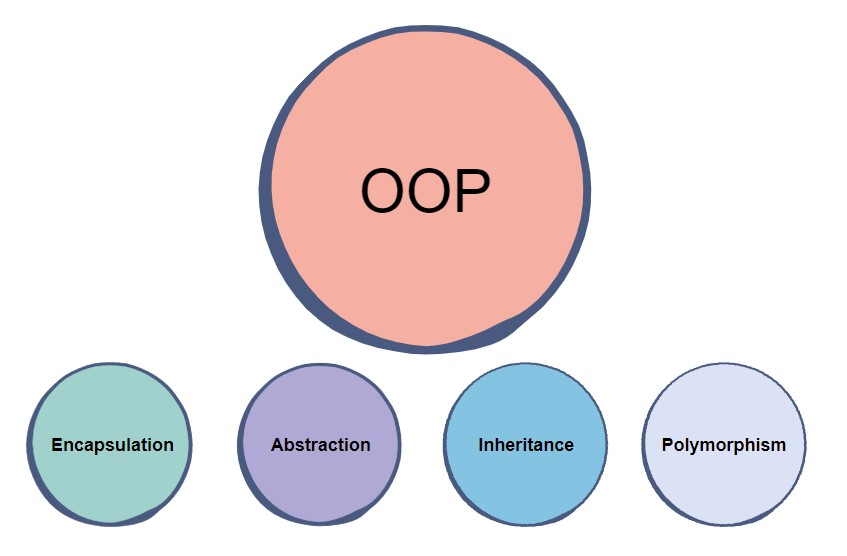
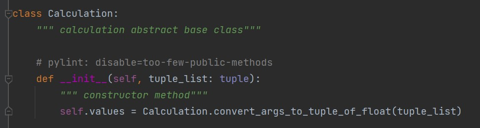
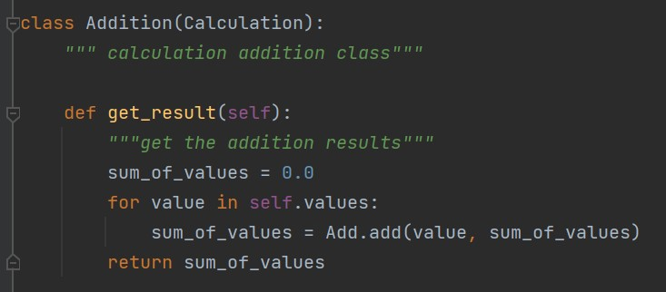
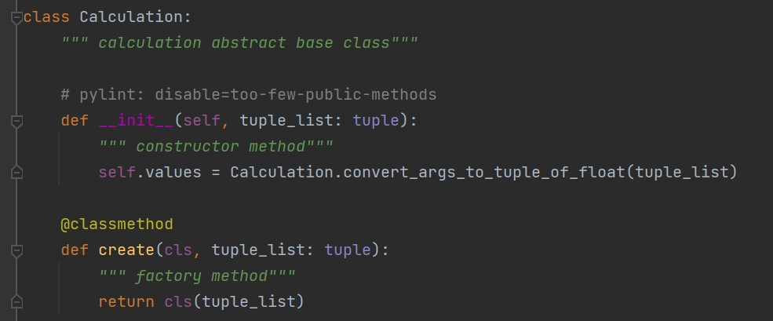
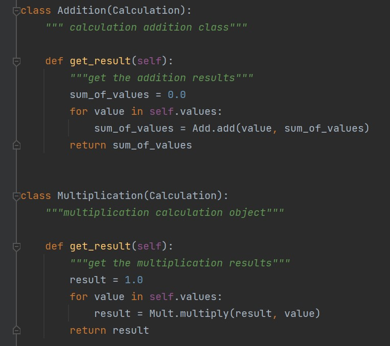

{% extends "base.html" %}
{% block content %}
Object-oriented Programming (OOP)
Definition
- Instantiation - is the realization of a predefined object.
-
Class - are essentially user defined data types. Classes are where we create a blueprint for the structure of methods and attributes. Individual objects are instantiated, or created from this blueprint.
- Objects - are instances of classes created with specific data
- Attributes - are the information that is stored. Attributes are defined in the Class template. When objects are instantiated individual objects contain data stored in the Attributes field.
- Methods - represent behaviors. Methods perform actions; methods might return information about an object, or update an object’s data. The method’s code is defined in the class definition.
- Static methods - is bound to the class and not the object of the class. It can't access or modify class state. It is present in a class because it makes sense for the method to be present in class. A static method does not receive an implicit first argument.
- Namespace - is a system that has a unique name for each and every object in Python
- Constructor - is a special method used to create and initialize an object of a class.
- Instance properties - are those properties that are defined inside any class and require an instance that is created with the help of the class name.
- Static properties are shared among all instances of a class.
Four Principles

- Inheritance
Child classes inherit data and behaviors from parent class
- Inheritance allows classes to inherit features of other classes. Parent classes extend attributes and behaviors to child classes. Inheritance supports reusability. If basic attributes and behaviors are defined in a parent class, child classes can be created extending the functionality of the parent class, and adding additional attributes and behaviors.


-
Explain code example: A child class Addition is inherited from the parent class Calculation and has a unique get the addition results method. Addition class automatically gains access to functionalities within Calculation class and adds an additional method get_result().
- Encapsulation
Containing information in an object, exposing only selected information
- Encapsulation means containing all important information inside an object, and only exposing selected information to the outside world. Attributes and behaviors are defined by code inside the class template. when an object is instantiated from the class, the data and methods are encapsulated in that object. Encapsulation hides the internal software code implementation inside a class, and hides internal data of inside objects.
- Encapsulation adds security. Attributes and methods can be set to private, so they can’t be accessed outside the class. To get information about data in an object, public methods & properties are used to access or update data.

-
Explain code example: It wraps data and the methods that work on data within one unit. __init__ allows data hinding using Encapsulation.
- Abstraction
Only exposing high level public methods for accessing an object
- Abstraction is used to hide the internal functionality of the function from the users. The users only interact with the basic implementation of the function, but inner working is hidden. User is familiar with that "what function does" but they don't know "how it does."
- Abstraction also serves an important security role. By only displaying selected pieces of data, and only allowing data to be accessed through classes and modified through methods, we protect the data from exposure.
- Explain code example: Abstraction hides all the implementation of calculation class away from anything outside of the class.
- Polymorphism
Many methods can do the same task
- Polymorphism means designing objects to share behaviors. Using inheritance, objects can override shared parent behaviors, with specific child behaviors.

- Explain code example: Child classes Addition and Multiplication shared the same method get_results(), but the Addition return the sum of numbers, while the Multiplication return the product of numbers. This example is Polymorphism with Inheritance when Addition and Multiplication are inherited from Calculation class
Resource
{% endblock %}